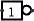

NOT Gate
NOT Gate
| Library: |
Gates |
| Introduced: |
2.0 Beta 1 |
| Appearance: |
| Shaped: |  |
|---|
| Rectangular: |  |
|---|
|
Behavior
The NOT Gate emits the complement of whatever input
it receives.
The truth table for a NOT gate is the following.
If the input is unspecified (i.e., floating), then the output will also be
unspecified - unless the "Gate Output When Undefined" option is "Error for
undefined inputs," in which case the output is an error. If the input is an
error value, then the output will also be.
A multi-bit NOT gate will perform the above transformation bitwise on
its input.
Pins (assuming component faces east)
- West edge (input, bit width according to Data Bits attribute)
- The component's input.
- East edge (output, bit width according to Data Bits attribute)
- The output, whose value is the complement of the input value.
Attributes
When the component is selected or being added,
Alt-0 through Alt-9 alter its Data Bits
attribute
and the arrow keys alter its Facing
attribute.
- Facing
- The direction of the component (its output relative to its input).
- Data Bits
- The bit width of the component's input and output.
- Gate Size
- Determines whether to draw a larger or a smaller version of the
component.
- Output Value
- Indicates how false and true results should be translated into output values.
By default, false is indicated by a low voltage (0) and true by a high voltage (1),
but one or the other can be replaced by a high-impedance (
floating
) value
instead. This allows wired-or and wired-and connections, as illustrated in
the AND/OR/NAND/NOR Gate documentation.
- Label
- The text within the label associated with the gate.
- Label Font
- The font with which to render the label.
Poke Tool Behavior
None.
Text Tool Behavior
Allows the label associated with the gate to be edited.
Back to Library Reference